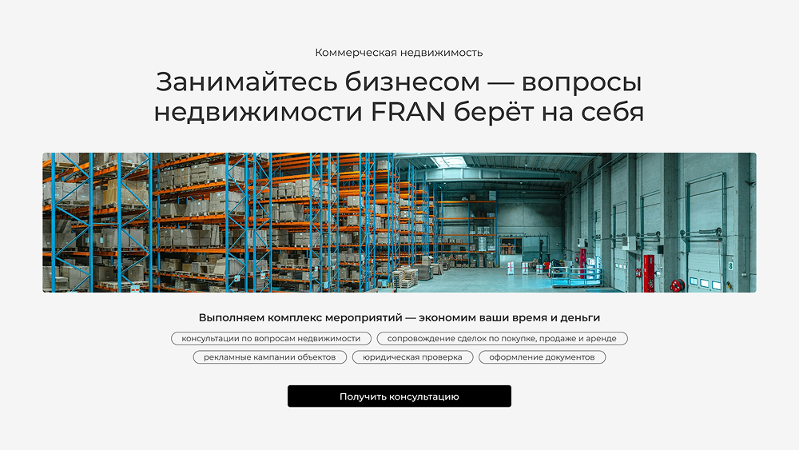
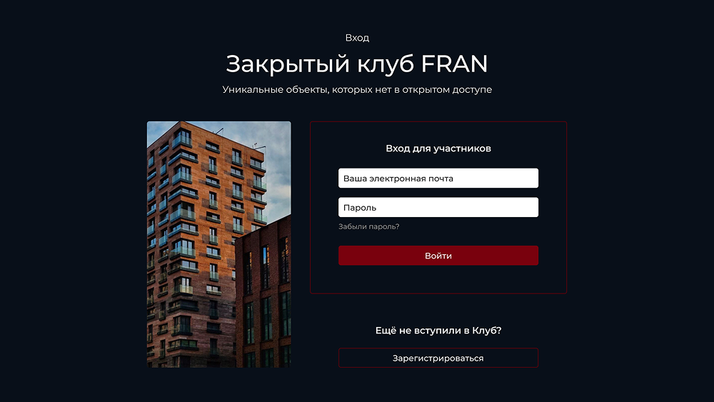
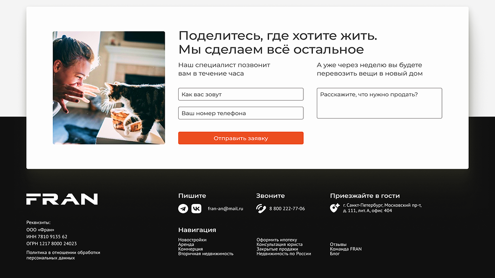
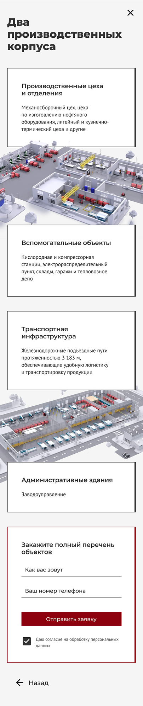

Набор услуг для агентства недвижимости




Задача
Пересобрать старый сайт с нуля. Нужно было сделать аккуратный, чистый интерфейс и подготовить сайт к запуску рекламы с учётом ограниченного бюджета
Решения
Гибридный формат: внутренние страницы сделал по принципу независимых лендингов. Клиент может запускать рекламу сразу на нужные направления (вторичка, новостройки, ипотека) без разработки отдельных страниц.
Фокус на заявках: отказался от каталога объектов с карточками и фильтрами, сделал упор на понятную подачу, формулировки и удобные формы захвата. Главная цель сайта — взять контакт для передачи в работу менеджеру.
Сопровождение под крупные объекты: за короткие сроки собрал серию лендингов и презентаций под продажу отдельных крупных объектов.
Результат
Первый для меня масштабный проект. С нуля спроектировал и собрал работающую структуру (основной сайт на 15 страниц + 7 промо-лендингов + набор презентаций + визитки и листовки), которая закрыла все текущие потребности агентства